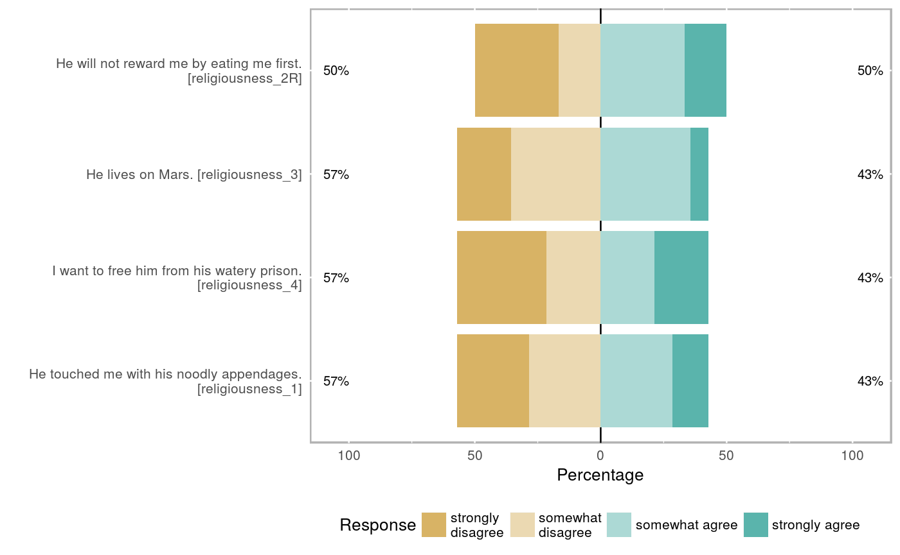
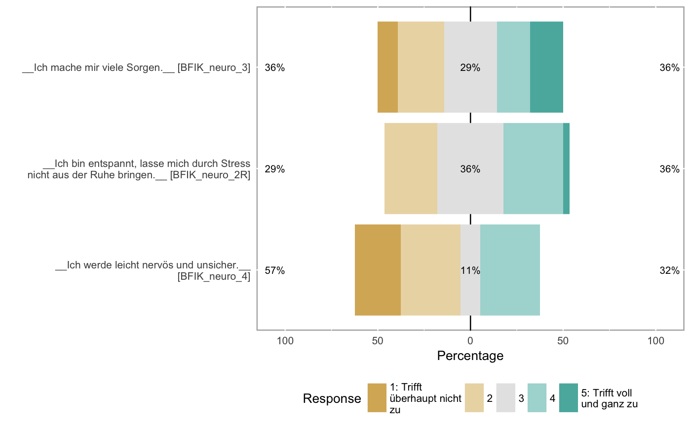

Compute reliabilities
If you pass the object resulting from a call to formr_results to this function, it will compute reliabilities for each scale. Internally, each reliability computation is passed to a future. If you are calculating multilevel reliabilities, it may be worthwhile to parallelise this operation using future::plan If you don't plan on any complicated parallelisation, you probably do not need to call this function directly, but can rely on it being automatically called during codebook generation. If you do plan to do that, you can pass the results of this operation to the codebook function.
compute_reliabilities(results, survey_repetition = "single")
Arguments
| results | a formr results table with attributes set on items and scales |
|---|---|
| survey_repetition | defaults to "single". Can also be "repeated_once" or "repeated_many" |
Examples
if (requireNamespace("formr", quietly = TRUE)) { example("formr_post_process_results", package = 'formr') reliabilities <-compute_reliabilities(results) }#> #>#> #> #>#> #> frm___> results = jsonlite::fromJSON(txt = #> frm___+ system.file('extdata/BFI_post.json', package = 'formr', mustWork = TRUE)) #> #> frm___> items = formr_items(path = #> frm___+ system.file('extdata/BFI_post_items.json', package = 'formr', mustWork = TRUE)) #> #> frm___> item_displays = jsonlite::fromJSON( #> frm___+ system.file('extdata/BFI_post_itemdisplay.json', package = 'formr', mustWork = TRUE)) #> #> frm___> results = formr_post_process_results(items, results, item_displays = item_displays, #> frm___+ compute_alphas = TRUE, plot_likert = TRUE)#> Warning: There were 2 rows with missings in BFIK_agree#> Warning: Some items were negatively correlated with the total scale and probably #> should be reversed. #> To do this, run the function again with the 'check.keys=TRUE' option#> Some items ( BFIK_agree_4 ) were negatively correlated with the total scale and #> probably should be reversed. #> To do this, run the function again with the 'check.keys=TRUE' option #> Reliability analysis BFIK_agree #> Call: psych::alpha(x = results[, scale_item_names], title = save_scale, #> check.keys = FALSE) #> #> raw_alpha std.alpha G6(smc) average_r S/N ase mean sd #> -0.3 -0.3 0.39 -0.061 -0.23 0.31 3.2 0.53 #> #> lower alpha upper 95% confidence boundaries #> -0.91 -0.3 0.32 #> #> Reliability if an item is dropped: #> raw_alpha std.alpha G6(smc) average_r S/N alpha se #> BFIK_agree_4 0.70 0.71 0.63 0.44 2.40 0.089 #> BFIK_agree_1R -0.78 -0.91 0.21 -0.19 -0.48 0.508 #> BFIK_agree_3R -1.00 -1.00 -0.17 -0.20 -0.50 0.607 #> BFIK_agree_2 -2.64 -2.21 -0.18 -0.30 -0.69 1.037 #> #> Item statistics #> n raw.r std.r r.cor r.drop mean sd #> BFIK_agree_4 28 -0.37 -0.39 -0.92 -0.71 3.1 1.18 #> BFIK_agree_1R 28 0.59 0.66 0.51 0.18 3.0 0.94 #> BFIK_agree_3R 28 0.71 0.68 0.79 0.14 3.0 1.29 #> BFIK_agree_2 28 0.87 0.85 0.75 0.50 3.5 1.26 #> #> Non missing response frequency for each item #> 1 2 3 4 5 miss #> BFIK_agree_4 0.11 0.25 0.18 0.39 0.07 0.07 #> BFIK_agree_1R 0.00 0.39 0.25 0.32 0.04 0.07 #> BFIK_agree_3R 0.11 0.32 0.14 0.29 0.14 0.07 #> BFIK_agree_2 0.07 0.18 0.18 0.32 0.25 0.07#> Warning: There were 2 rows with missings in BFIK_open#> #> Reliability analysis BFIK_open #> Call: psych::alpha(x = results[, scale_item_names], title = save_scale, #> check.keys = FALSE) #> #> raw_alpha std.alpha G6(smc) average_r S/N ase mean sd #> 0.53 0.51 0.54 0.21 1.1 0.14 4.3 0.56 #> #> lower alpha upper 95% confidence boundaries #> 0.26 0.53 0.8 #> #> Reliability if an item is dropped: #> raw_alpha std.alpha G6(smc) average_r S/N alpha se #> BFIK_open_2 0.52 0.50 0.53 0.251 1.01 0.15 #> BFIK_open_1 0.58 0.56 0.51 0.297 1.27 0.13 #> BFIK_open_4 0.41 0.41 0.32 0.188 0.70 0.18 #> BFIK_open_3 0.22 0.24 0.20 0.097 0.32 0.25 #> #> Item statistics #> n raw.r std.r r.cor r.drop mean sd #> BFIK_open_2 28 0.53 0.59 0.30 0.23 4.2 0.74 #> BFIK_open_1 28 0.51 0.53 0.28 0.16 4.4 0.83 #> BFIK_open_4 28 0.70 0.66 0.57 0.36 4.2 0.96 #> BFIK_open_3 28 0.80 0.77 0.73 0.54 4.2 0.96 #> #> Non missing response frequency for each item #> 1 2 3 4 5 miss #> BFIK_open_2 0.00 0.04 0.07 0.54 0.36 0.07 #> BFIK_open_1 0.00 0.04 0.11 0.29 0.57 0.07 #> BFIK_open_4 0.04 0.00 0.14 0.36 0.46 0.07 #> BFIK_open_3 0.00 0.07 0.14 0.29 0.50 0.07#> Warning: There were 2 rows with missings in BFIK_consc#> #> Reliability analysis BFIK_consc #> Call: psych::alpha(x = results[, scale_item_names], title = save_scale, #> check.keys = FALSE) #> #> raw_alpha std.alpha G6(smc) average_r S/N ase mean sd #> 0.78 0.79 0.78 0.48 3.7 0.06 3.7 0.79 #> #> lower alpha upper 95% confidence boundaries #> 0.66 0.78 0.9 #> #> Reliability if an item is dropped: #> raw_alpha std.alpha G6(smc) average_r S/N alpha se #> BFIK_consc_3 0.60 0.61 0.52 0.34 1.6 0.114 #> BFIK_consc_4 0.76 0.77 0.72 0.53 3.4 0.071 #> BFIK_consc_2R 0.73 0.73 0.71 0.47 2.7 0.082 #> BFIK_consc_1 0.78 0.80 0.77 0.58 4.1 0.064 #> #> Item statistics #> n raw.r std.r r.cor r.drop mean sd #> BFIK_consc_3 28 0.91 0.91 0.92 0.81 3.5 1.04 #> BFIK_consc_4 28 0.69 0.74 0.63 0.53 3.9 0.76 #> BFIK_consc_2R 28 0.84 0.79 0.70 0.62 3.2 1.31 #> BFIK_consc_1 28 0.67 0.69 0.52 0.47 4.1 0.90 #> #> Non missing response frequency for each item #> 1 2 3 4 5 miss #> BFIK_consc_3 0.04 0.14 0.25 0.43 0.14 0.07 #> BFIK_consc_4 0.00 0.04 0.25 0.54 0.18 0.07 #> BFIK_consc_2R 0.18 0.11 0.18 0.43 0.11 0.07 #> BFIK_consc_1 0.00 0.07 0.14 0.43 0.36 0.07#> Warning: There were 2 rows with missings in BFIK_extra#> #> Reliability analysis BFIK_extra #> Call: psych::alpha(x = results[, scale_item_names], title = save_scale, #> check.keys = FALSE) #> #> raw_alpha std.alpha G6(smc) average_r S/N ase mean sd #> 0.9 0.9 0.91 0.69 8.9 0.031 3.8 1 #> #> lower alpha upper 95% confidence boundaries #> 0.84 0.9 0.96 #> #> Reliability if an item is dropped: #> raw_alpha std.alpha G6(smc) average_r S/N alpha se #> BFIK_extra_2 0.90 0.90 0.88 0.76 9.5 0.030 #> BFIK_extra_3R 0.87 0.87 0.85 0.68 6.5 0.044 #> BFIK_extra_4 0.85 0.85 0.82 0.65 5.7 0.047 #> BFIK_extra_1R 0.85 0.85 0.80 0.66 5.9 0.047 #> #> Item statistics #> n raw.r std.r r.cor r.drop mean sd #> BFIK_extra_2 28 0.81 0.82 0.73 0.67 4.2 1.1 #> BFIK_extra_3R 28 0.89 0.88 0.84 0.79 3.8 1.2 #> BFIK_extra_4 28 0.90 0.91 0.88 0.82 3.9 1.1 #> BFIK_extra_1R 28 0.91 0.90 0.89 0.82 3.6 1.2 #> #> Non missing response frequency for each item #> 1 2 3 4 5 miss #> BFIK_extra_2 0.07 0.00 0.07 0.39 0.46 0.07 #> BFIK_extra_3R 0.07 0.07 0.21 0.32 0.32 0.07 #> BFIK_extra_4 0.04 0.11 0.14 0.39 0.32 0.07 #> BFIK_extra_1R 0.04 0.18 0.21 0.29 0.29 0.07#> Warning: There were 2 rows with missings in BFIK_neuro#> #> Reliability analysis BFIK_neuro #> Call: psych::alpha(x = results[, scale_item_names], title = save_scale, #> check.keys = FALSE) #> #> raw_alpha std.alpha G6(smc) average_r S/N ase mean sd #> 0.75 0.75 0.71 0.5 3 0.072 2.9 0.93 #> #> lower alpha upper 95% confidence boundaries #> 0.61 0.75 0.89 #> #> Reliability if an item is dropped: #> raw_alpha std.alpha G6(smc) average_r S/N alpha se #> BFIK_neuro_2R 0.84 0.84 0.73 0.73 5.28 0.058 #> BFIK_neuro_3 0.59 0.61 0.44 0.44 1.57 0.141 #> BFIK_neuro_4 0.47 0.49 0.32 0.32 0.96 0.181 #> #> Item statistics #> n raw.r std.r r.cor r.drop mean sd #> BFIK_neuro_2R 28 0.65 0.72 0.46 0.41 3.1 0.88 #> BFIK_neuro_3 28 0.88 0.84 0.76 0.65 3.1 1.27 #> BFIK_neuro_4 28 0.90 0.89 0.84 0.74 2.5 1.20 #> #> Non missing response frequency for each item #> 1 2 3 4 5 miss #> BFIK_neuro_2R 0.00 0.29 0.36 0.32 0.04 0.07 #> BFIK_neuro_3 0.11 0.25 0.29 0.18 0.18 0.07 #> BFIK_neuro_4 0.25 0.32 0.11 0.32 0.00 0.07#> Warning: Some items were negatively correlated with the total scale and probably #> should be reversed. #> To do this, run the function again with the 'check.keys=TRUE' option#> Some items ( BFIK_agree_4 ) were negatively correlated with the total scale and #> probably should be reversed. #> To do this, run the function again with the 'check.keys=TRUE' option